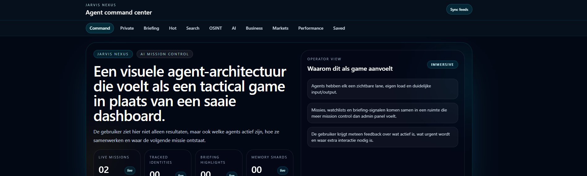

AGENTES · VOZ · GESTOS
Jarvis
Un centro de mando de IA manos libres: una arquitectura de agentes visual que se siente como un juego táctico, controlada con palmadas, voz y gestos de la mano.
RESULTADO
3 modos de control manos libres — palmada, voz y gestos — sobre un cerebro local.

01 EL PROBLEMA
Una ventana de chat es pasiva. Quería un asistente que se vea trabajar — qué agentes están activos, cómo colaboran y dónde surge la siguiente acción — y que controlas con las manos libres.
02 QUÉ HACE
- Centro de mando de agentes
- Un Nexus-Core orquesta agentes especializados (investigación, briefing, memoria, riesgo) — cada uno con su propio carril, carga y entrada/salida claras. Más mission control que panel de administración.
- Control por palmadas
- 2 palmadas cortas abren tus dashboards, música y editor; 3 palmadas lanzan una pregunta hablada a tu base de conocimiento. Totalmente manos libres.
- Voz en flamenco
- Entrada de voz y respuestas habladas en el neerlandés de aquí.
- Gestos de la mano
- Una versión aparte controla la interfaz con gestos de la mano a través de la cámara.
- Cerebro local
- Funciona con IA local, así que tus conversaciones y datos se quedan en tu propia máquina.
03 LO QUE APRENDÍ
El control manos libres te obliga a simplificar la intención: una palmada, un gesto, una frase. El verdadero reto no estaba en las funciones, sino en reconocer de forma fiable y dar feedback claro al instante.
¿TE INTERESA?
Vamos a hablar.
Dime qué te parece — o qué te gustaría hacer con ello.